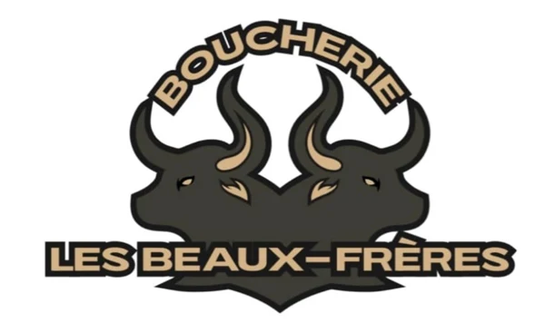
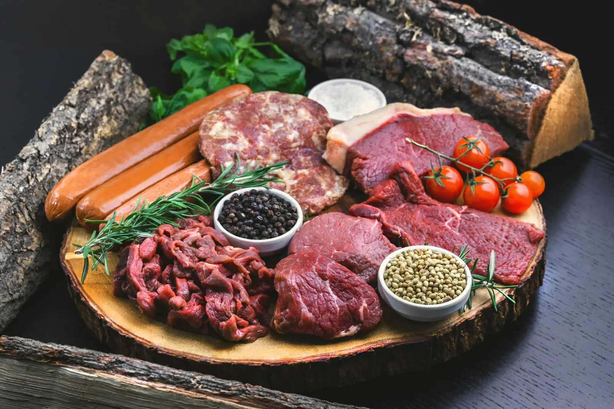
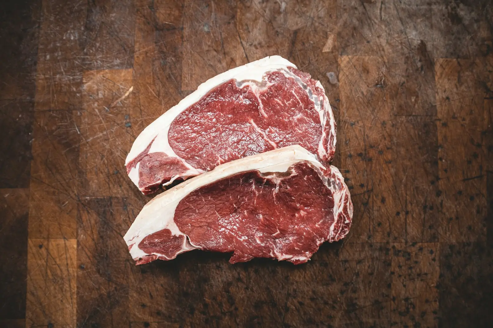

819-535-1114Coupes au comptoir, charcuteries et mets préparés maison, ailes de poulet, et plus de 75 sortes de saucisses.
Commander par téléphone
Fait maison
Plus de 75 saucisses maison. Pour le BBQ, la raclette ou le souper de semaine — demandez au comptoir ce qui sort cette semaine.
Prix et produits de la semaine à fournir par la boucherie.

Ouverte en octobre 2024 dans l'ancien local de la boucherie du village, la Boucherie Les Beaux-Frères a redonné un comptoir de viandes à Saint-Étienne-des-Grès. La MRC de Maskinongé l'a soulignée comme « Bon coup » du mois de mai 2025.
5,0 / 5 · 15 avis Google · voir sur Google Maps
« J'adore aller dans cette boucherie!! Le personnel est toujours souriant !! Ils vous recommandent et vous aident lorsque vous avez besoin. Très bonne viande!! Grosse variété de saucisse !! Merci !! »
« Wawe la sauce aux champignons super! »